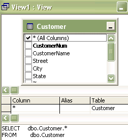

Project 3 Background Info Note: Background information details steps to setup and configure the required virtual machine needed for this project. Do NOT proceed until your Hyper-V virtual machine is ready to go!
You can work together and help each other on this project, but each student must hand in their own work.
The aim of this part is to create a SQL Server database. You will upsize the Microsoft Access Northwind database so that it is a SQL server database. This project illustrates the use of Microsoft Access as a front end for SQL server.
You will use the same MIS342 Virtual Machine as in Part 1 to complete this project.
When done try creating new queries or views.

Reflect on the work that you just completed. Feel free to research the internet and Lynda.com for 'benefits of using Access with SQL Server'. Examine the database window in both Access and the Access Data Project. (50) 3. Briefly explain the difference(s) between the Access and Access Data Project Windows:
(50) 4. Briefly explain the benefit of developing an application in Microsoft Access, and then upsizing the applicatioin to SQL Server.
Use a web browser to verify that you have published your website to https://classes.winona.edu/... Check that your name, StarID, email, class, semester, section and all of your answers are correct and visible. From the menu choose File>Print... and using "Microsoft Print to PDF" save a copy of this assignment as a .pdf file in your ' ' folder.
(50) 5. Save your file 'WebPage.pdf' to the ' ' folder.
Create one .pdf (portable document format) file from the screen shots that you have taken by following these steps.
(50) 6. Save your file 'ScreenShots.pdf' to the ' ' folder.
Use PDFill to merge the WebPage.pdf file with the ScreenShots.pdf file, and save it as 'Project03_2.pdf' in ' ' folder.
(50) 7. Upload your file 'Project03_2.pdf' to the D2L 'Project03' Assignment folder.
Use a browser to view your completed and published website at: https://classes.winona.edu/... Ensure that you have linked this assignment on your home page. Note that your screen shots do not have to be completed to perform this step.